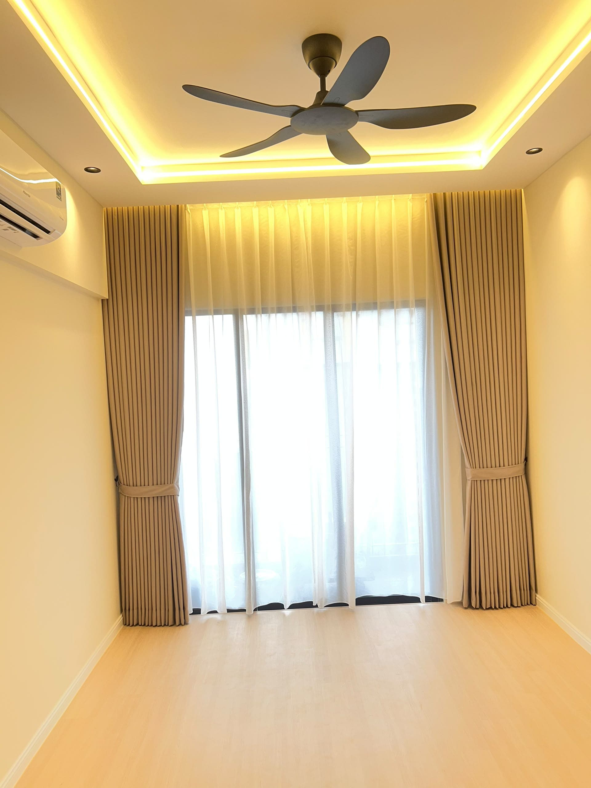
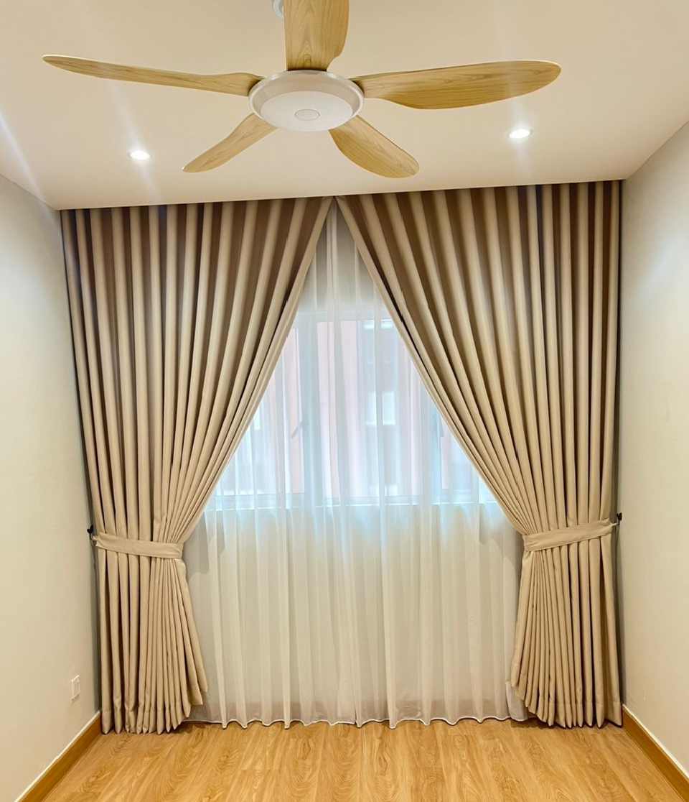
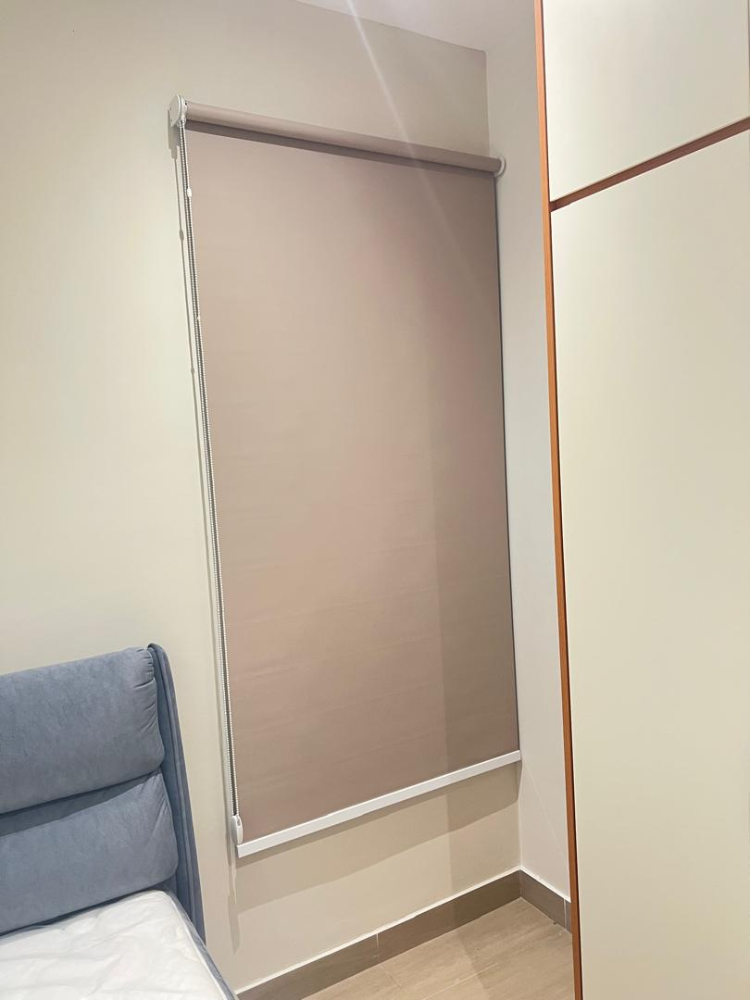
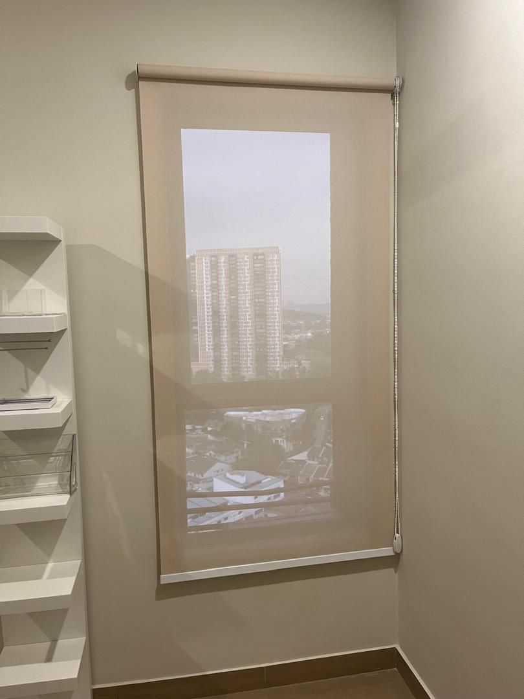
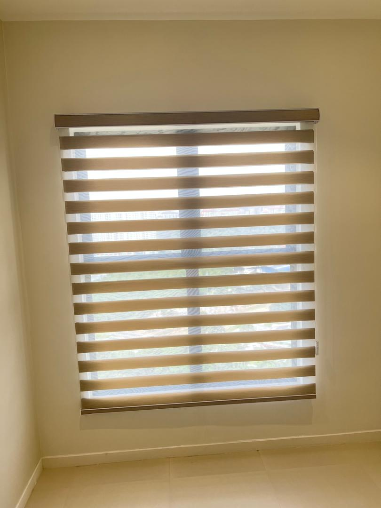

S-Fold / Wave Curtains
Modern, smooth waves for a clean and elegant look in living rooms, bedrooms and full-height windows.
Ask about S-Fold →Read details →Looking for custom curtains in Kuala Lumpur or Petaling Jaya? SK Curtain KL provides made-to-measure S-Fold wave, sheer, blackout and double-layer curtains, plus sunscreen roller and zebra blinds. We bring fabric samples, measure at your home, arrange tailoring and professionally install your order across KL, PJ, Cheras, Kajang, Sunway and nearby Klang Valley areas.

From condo bedrooms to full-height living-room windows, we help you choose suitable curtain fabrics, tracks and blinds for your space. Our service covers on-site measurement, quotation, tailoring coordination and installation. Contact us with your location and window photos to get started.
From soft sheers to practical blinds, we help you choose a style that suits your windows, privacy needs and interior.

Modern, smooth waves for a clean and elegant look in living rooms, bedrooms and full-height windows.
Ask about S-Fold →Read details →
Help reduce incoming light and improve privacy. A practical choice for bedrooms and media rooms.
Ask about blackout →Read details →Soft daylight and a lighter feel while adding a layer of privacy to your windows.
Ask about sheers →
Filter daylight and reduce glare while keeping your room bright. Suitable for homes and workspaces.
Ask about sunscreen blinds →Read details →
Adjust alternating sheer and opaque fabric bands to balance light and privacy throughout the day.
Ask about zebra blinds →Read details →Pair a sheer layer with a thicker curtain for flexible daylight, privacy and a complete window finish.
Ask about double layers →Every window is different. SK Curtain KL provides a made-to-measure service: we arrange an on-site visit, take measurements, help you select suitable fabric and styles, arrange tailoring, and install the finished curtains or blinds.
We focus on a neat finish, practical advice and a smooth process from your first enquiry to installation.
We take care of the steps needed to get a made-to-measure finish for your home.
Send your location, window photos and what type of curtains or blinds you have in mind.
Arrange an on-site measurement and look through suitable fabric, colours and styles.
After confirmation, fabric is arranged and your curtains are tailored to the agreed measurements.
We arrange installation and check the finished window setup with you.
Explore a few examples of curtain and blind styles. Actual fabric colours and textures can vary by sample and lighting.
Alongside curtains and blinds, SK Curtain & Home Maintenance Services can assist with selected household maintenance work.
Selected tap, pipe, shower and bathroom repairs.
Selected light fittings, switches and basic electrical jobs.
Sealing and minor water-leak related maintenance.
TV mounting, mirror hanging and general household fixes.
Service availability depends on job details, site conditions and scheduling. Please enquire with photos.
SK Curtain KL welcomes enquiries and collaboration from renovation contractors, interior designers, property agents, developers, building management teams and other businesses looking for a curtain and blinds service partner.
Whether you are handling a single unit, a new home handover or a larger project, contact us to discuss made-to-measure curtains and blinds, measurement arrangements, tailoring coordination and installation.
Discuss B2B Partnership ↗Tell us about your project, location, estimated quantity and required timeline. We can discuss the scope and provide a project quotation.
Contact us with your postcode or location to confirm visit availability.
Send us your window photos and location for an enquiry.
Some helpful details about ordering custom curtains and blinds.
Yes. We arrange curtains according to your window measurements, selected fabric and preferred style. The process includes on-site measurement, fabric selection, tailoring and installation.
Yes, you can contact us to arrange a measurement visit. Share your location and preferred timing on WhatsApp so we can confirm availability.
Pricing depends on window size, fabric, curtain style, number of layers, tracks or accessories, and installation requirements. As a broad planning guide, many home curtain and blind projects may fall around RM1,500–RM5,000; your actual quotation will depend on your requirements.
Lead time depends on fabric availability, order size, tailoring and installation scheduling. We will advise the estimated timeline after measurements and order confirmation.
Yes. We provide selected sunscreen roller blinds and zebra blinds. Send us a window photo and approximate measurements to discuss suitable options.
We serve Kuala Lumpur, Petaling Jaya, Cheras, Kajang, Balakong, Seri Kembangan, Puchong, Bukit Jalil, Sunway, Subang Jaya, Ampang, Bangi, Klang and nearby areas. Contact us to confirm availability for your location.
WhatsApp us at 016-812 1996. If possible, include your location, window photos, approximate width and height, and the style you are interested in.